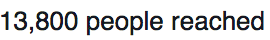
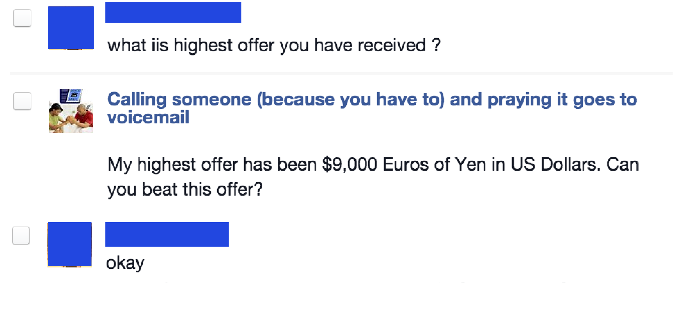
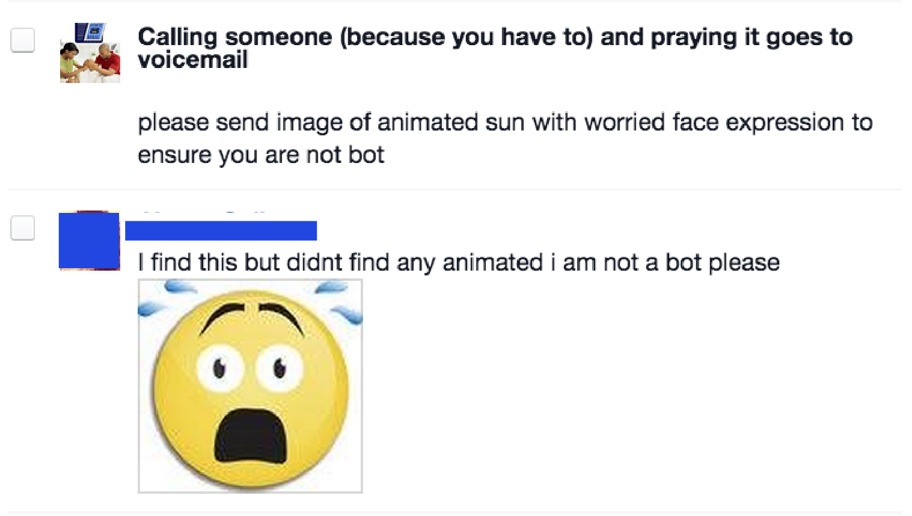
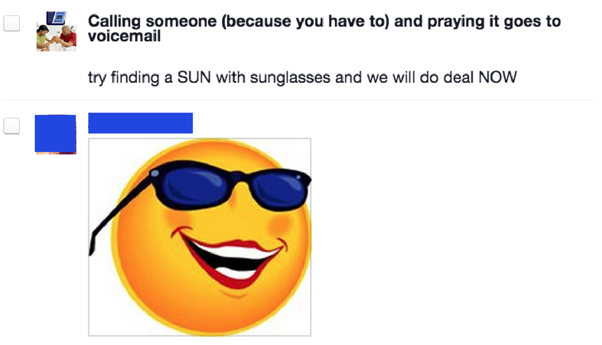
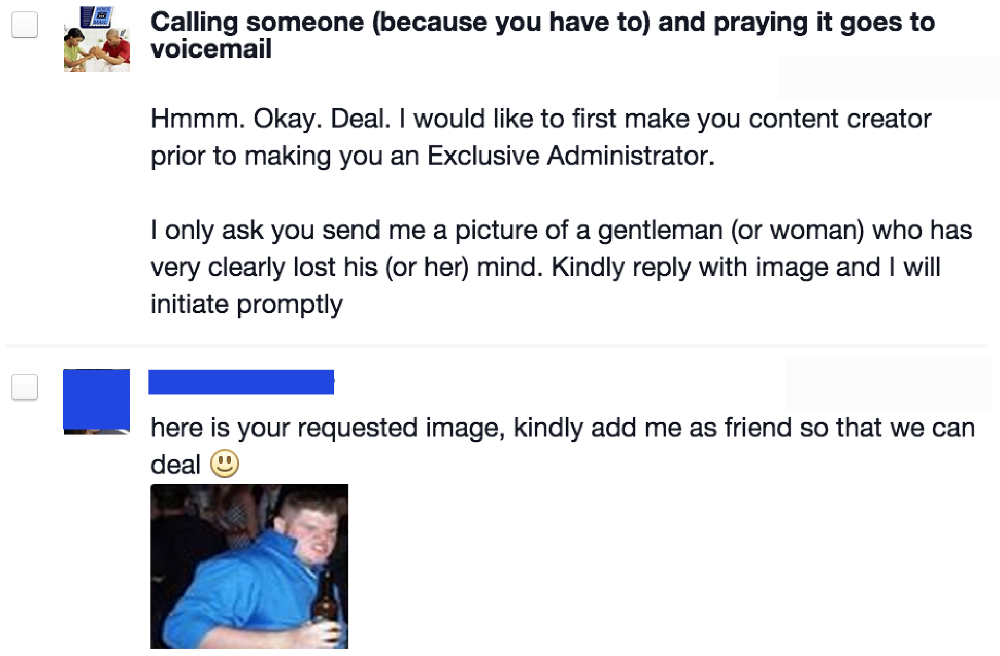
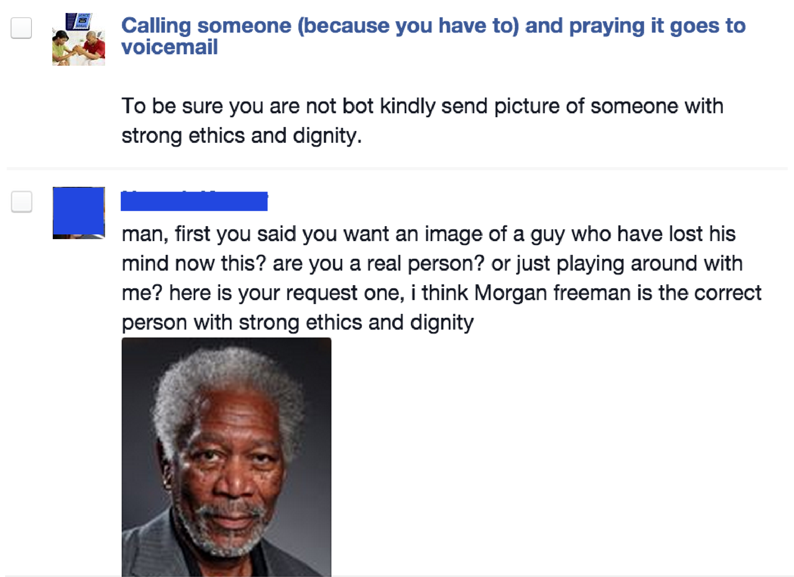
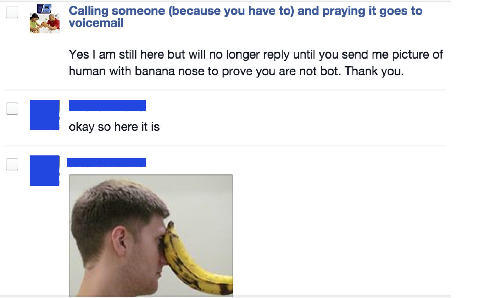
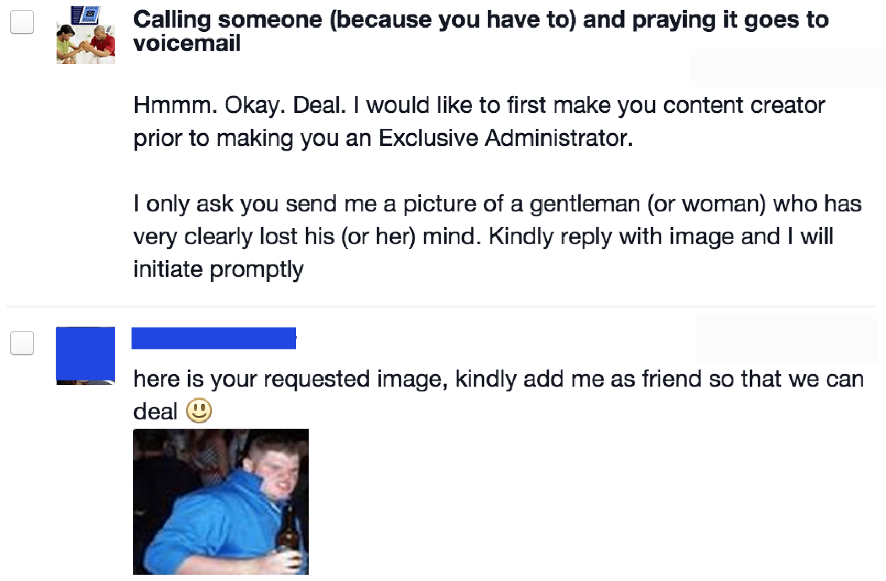
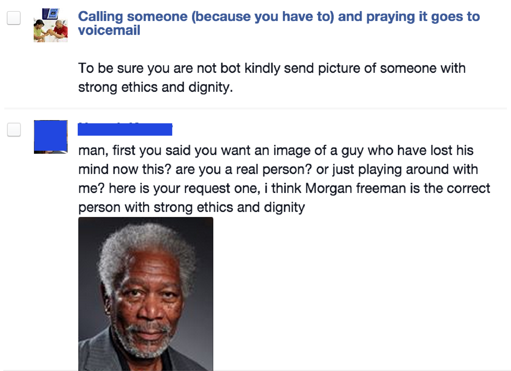
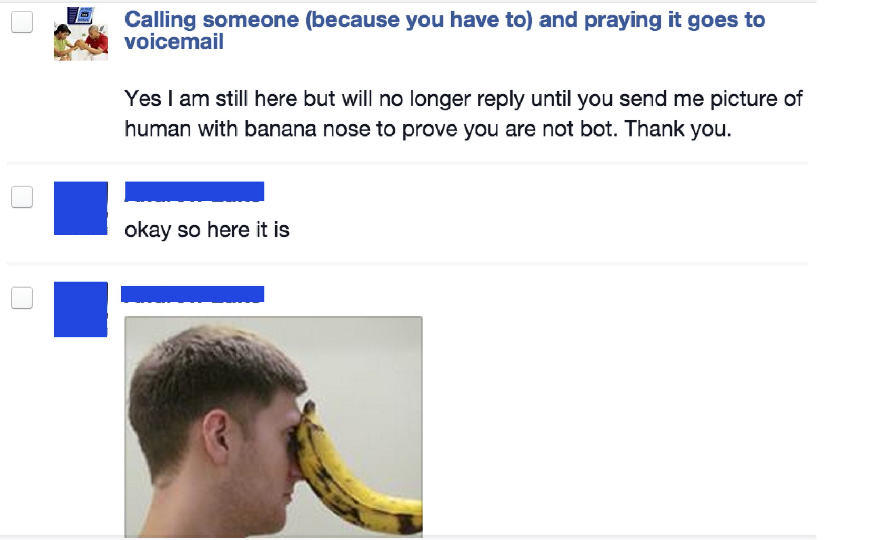

"I built the v1, now what?"
During my downtime in college, I worked on a few projects to expedite my work. My favorite was an app that a friend and I worked on which assited in writing essays. I called it BuildBooth. It didn't write the essay, but provided a roadmap to ensure ideas wouldn't turn into a melted heap of amalgamated words. Things like how to title an paper or write a strong thesis. I thought projects like these could benefit others, so I looked for ways to get them seen.
Something from nothing
On a spontaneous whim one night in January 2010, I created a Facebook page that I thought might resonate with at most a few dozen people. I gave the page the brief title of Calling someone (because you have to) and praying it goes to voicemail. In a fleeting few minutes before falling asleep, I made the page's image an awful Photoshop rendering of a couple praying with ms-clipboard phones near their ears, and invited 6 close friends to join.
The topic reminded me of a potential Seinfeld plot line. I pictured Costanza complaining to Jerry about how every time he's forced to call someone, the phone gets answered. Picture an enthusiastic Kramer telling Costanza “You know George, you really only ought to call people before 6am or after midnight. That way you get to their voicemails!”
I believed the page could appeal to anyone who has used a phone, but particularly tech-inclined millennials like me. I woke up to see 50 people had liked the page. Which was surprising enough. After a few days and a couple thousand likes, membership logarithmically scaled. By the end of the 1st week it grew to 50,000 people. In another few days it doubled. It soon doubled again. Eventually it topped 350,000. One interesting insight turned out to be the user segment analytics.

Over 90% of the group are millennials.
Pretty much hit it on the head. My audience is basically comprised by Gen-Y'ers. I didn't anticipate women outnumbering men 5:1, but cool, women are 33% more likely to earn college degrees. That's a benefit for BuildBooth.
The page's posts faired well in terms of the impressions they made and the traffic they drove. A status update would generally drive a couple hundred hits to the links I posted. Doing this, I found dozens of beta users for using BuildBooth. Although I did later find out the idea's financial upside was fairly small when most of the users - including some who gave overwhelmingly positive reviews - weren't willing pay $5 for the tool. But still, I was getting a lot of top-line impressions and high CTR's. I was in a position to continue iterating on my product concept and see if something would finally stick.
In 2013, things changed.
Impression stats began oscillating wildly. My posts would see stats go from

to
 ...It turned out that Facebook revamped its EdgeRank algorithm. EdgeRank, which determines what content Facebook users see on their main feed, substantially reduced impression counts for most page owners. That angered many users, including a few high profile ones. Some companies still haven't returned to Facebook to market their products.
On average, my click-through's per post went from a few hundred to a few dozen. Most page admins saw the same thing, and many of them speculated it was an attempt on behalf of Facebook to milk promotion dollars. Facebook took the position that if the pages posted good content its EdgeRank would adjust accordingly. It was likely a hybrid of those reasons; Facebook's a public company now, and if all users saw were page or company-created content they'd likely stop checking it 14 times a day. Either way, I'm happy to have ridden the ride and learn a few things along the way.
...It turned out that Facebook revamped its EdgeRank algorithm. EdgeRank, which determines what content Facebook users see on their main feed, substantially reduced impression counts for most page owners. That angered many users, including a few high profile ones. Some companies still haven't returned to Facebook to market their products.
On average, my click-through's per post went from a few hundred to a few dozen. Most page admins saw the same thing, and many of them speculated it was an attempt on behalf of Facebook to milk promotion dollars. Facebook took the position that if the pages posted good content its EdgeRank would adjust accordingly. It was likely a hybrid of those reasons; Facebook's a public company now, and if all users saw were page or company-created content they'd likely stop checking it 14 times a day. Either way, I'm happy to have ridden the ride and learn a few things along the way.
What I would do differently today
A good rule of thumb is to make about 80% of your social media posts valuable, non-promotional, inbound content. Only about 1 in every 5 posts should be promotional. At best, 1 in 5 posts I made weren't promotional. This certainly played a part in my page's hampered EdgeRank. I was also interested in making quick conversions when I should have been concentrating on creating a "flywheel" of non-promotional content. While these campaigns are very slow out of the gate they eventually "tip" and build real momentum. According to Rand Fishkin of Moz, the customers who visit Moz 7-12+ times are the ones who churn the least. Rand found that the more time users spent visiting the site prior to starting a trial, the longer Moz retained them as paying customers. Very few customers convert the instance they are shown a new product. For Moz it takes at least 7 visits before a user generally starts a free trial. Software companies should optimize for familiarity first, collecting contact information next (to nurture leads), and then eventually try to transition to making a sale. I've noticed a trend that emphasizes getting emails first with web apps. Many apps, including Getaround and Clarity, don't even let users see their apps unless they're signed in. Although this adds an extra step and some users unquestionably bounce off at this stage, these sites know it generally takes a user several visits before they end up paying. So they optimize for user returns, not purchases. Users often need to be reengaged with retargeting or email campaigns to get these users to come back. Although I did collect some emails, I didn't have the luxury with retargeting for a $5 app.
Takeaways
Consumer is hard.
Selling to anyone is tough, but selling consumer software to college undergrads is tough as nails. The contract values aren't high enough to warrant outbound prospecting, so that's out of the picture. Finding a way to get found by customers who aren't looking for your service, at scale, is a superpower. Product is not the #1 startup killer. Distribution is. This is why we frequently see Luminosity commercials and banners. Not many consumers are "in motion" looking for paid brain games. Luminosity has to do its own heavylifting with respect to educating the market to generate demand for its product. In contrast, businesses are often in motion searching for a solution. Businesses understand that they need to spend money. Enterprises will happily pay for XaaS tools so they don't have to build in-house, whether it's increasing topline by accelerating lead gen, or utilizing analytics to inform better marketing and product decisions. Not creating these solutions in-house let's them focus on their core competencies.
Test. Continuously.
Test everything. I tested status post timing, as well as content and copy featured in my page's updates. I tested landing page copy and styling to maximize conversions. I learned how to optimize content for other networks like Twitter. Never stop testing - this applies to your flagship channels as well as new channels. I like the framework Traction lays out. Focus on rapidly finding the most effective channel, and once it's found, have a strategy that lets you methodically test other channels in tandem.
Don't rely on one channel.
There seems to be a half-life to most marketing channels. For whatever reason, channels seem to find a way of being less effective. As competitors saturate a network, ad costs are bid up to approximate Customer Lifetime Values. Or other marketers start to abuse a channel so there's more noise to rise above (e.g. email, social media). Or the platforms themselves realize that marketers are abusing it (e.g. Gmail's 'promotions' tab, Google's Panda for SEO). Many things can happen and eventually something will. If you find a channel that works well, assume it is temporary. If you anticipate this from the very beginning, you won't get surprised when CTRs start cresting off with your most successful channel. And, hopefully, you'll have identified more promising channels to doubledown on.
Bonus
There is a dark underbelly to Facebook page administration: dealing with the world's least successful scammers. To date I've received about forty solicitations in the form of Facebook messages from people interested in "buying" the page. Five of them, at most, were real offers. The rest promised over 10x the page's market value and if given admin status planned to remove me as admin and cancel their PayPal transfer.
With a hat-tip to Rob DenBleyker, I found great satisfaction in testing the imagination and Google prowess of these scammers by asking them to confirm they weren't bots by doing, you know, normal every day image searches.



 
Closing up...



Closing up...

